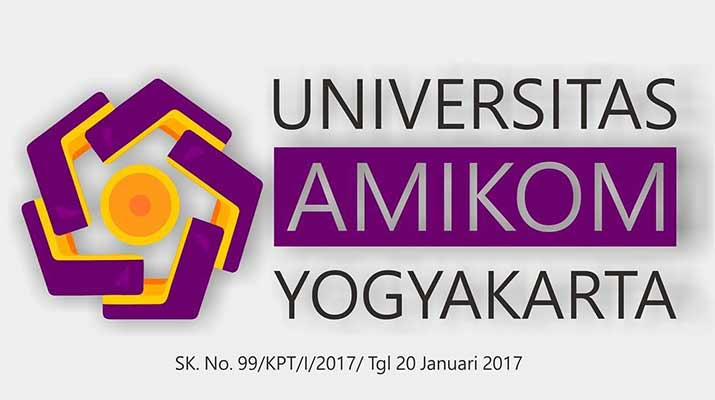

Tentang Saya

| Salam | : Assalamualaikum |
| Nama Lengkap | : Muhammad Asyrov Illahi |
| Jenis Kelamin | : Laki - laki |
| Agama | : ISLAM |
| Tempat/ Tanggal Lahir | : Bojonegoro / 14 Juli |
| Alamat | : Pasinan kec. Baureno kab. Bojonegoro |
| Universitas | : Universitas AMIKOM Yogyakarta |
| NIM | : 19.01.4340 |
| Fakultas | : Ilmu Komputer |
| Prodi | : D3 - Teknik Informatika |
| ANGKATAN | : 2019 |
| Motto ! | : Dont hardwork, this life is temporary |
| Salam | : Assalamualaikum |
| Nama Lengkap | : Nizal Akhmad Muzakki |
| Jenis Kelamin | : Laki - laki |
| Agama | : ISLAM |
| Tempat/ Tanggal Lahir | : Bojonegoro / 31 Januari |
| Alamat | : Prupuk Selatan kec. Margasari kab. Tegal |
| Universitas | : Universitas AMIKOM Yogyakarta |
| NIM | : 19.01.4353 |
| Fakultas | : Ilmu Komputer |
| Prodi | : D3 - Teknik Informatika |
| ANGKATAN | : 2019 |
| Motto ! | : Believe in yourself! |